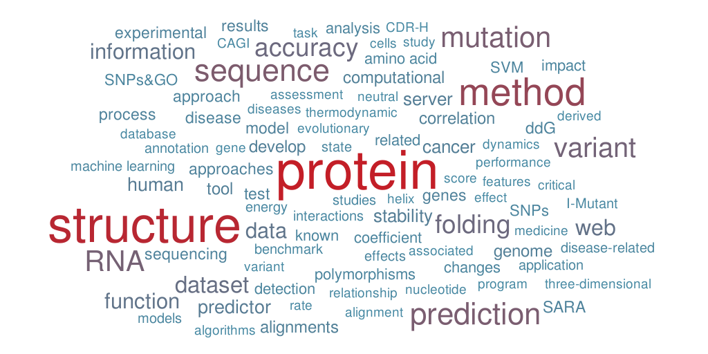

|
Biomolecules Folding and Disease |
|
|
|

email: emidio.capriotti@unibo.it |
 |
Since October 2016, I am senior assistant
professor (RTDb) at the Department of Pharmacy and Biotechnology (FaBiT), University of Bologna, Bologna, Italy.
From July 2015 to September 2016 I was junior group leader at
the Institute of Mathematical Modeling of Biological Systems, University of Duesseldorf, Duesseldorf (Germany). From 2012 to 2015, I was assistant professor in the Department of Pathology at the University of Alabama at Birmingham (UAB). Until 2012, I was a Marie Curie IOF researcher in the
Bioengineering Department at
Stanford University. Previously, I was postdoc for 2 years in the Biocomputing Group
at the University of Bologna (Italy) and 3 years in the Structural
Bioinformatics Unit at CIPF of Valencia (Spain).
I am PhD in physical sciences from the University of Bologna. My scientific
background is in Structural Bioinformatics and in the last years
my research
activity focuses on the study of the effect of Single Nucleotide Variants (SNVs) resulting in single amino
acid changes. I applied tools for the analysis of protein three-dimensional
structure to predict the effect of single point protein mutations on the protein
stability developing machine learning methods to evaluate the free energy change
upon single point mutations (nsSNVs). More recently, my research focuses on the relationship between SNVs and
the insurgence of human disease.
Using information derived from the protein sequence and sequence profile,
I implemented web server tools to predict
disease-related protein mutations.
The final goal of my research activity is the understanding of the relationship
between genomic variations and disease using large amount of data derived from
high-throughput techniques. I am interested to design new disease-specific algorithms
and tools for the personal genomics and personalized medicine.
For more details about my scientific activity download my CV.